Mr. Tom has put before the company a proposal of considerable boldness: that we should build a raft, set it upon a river, and follow that river wherever it may lead. Not to any port or city, mind, for this river is to have no mouth at all. It is to go on, bend after bend, for as long as a traveller cares to drift.
Upon the raft one is to live. There is a small tent, a lantern, a long oar for steering, a pole for the shallows and an anchor for when one has seen enough of the current for one day. Miss Noor would have the traveller make a home of it, and has promised secret places along the way for a careful eye to discover. The plans also speak of a camera of glass plates, and of an animal companion.
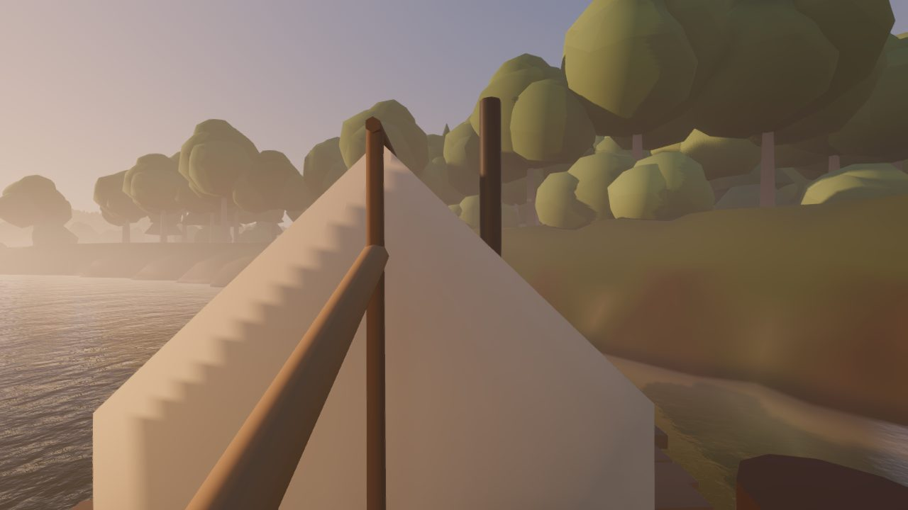
Plate I. — From the deck, at first light.
The engineer notes that "the river must be perfect" was said three times before breakfast.
✦
Entry the Second · 23rd November
The River Finds its Bed
We have resolved to make the river first and the country around it afterwards, as Nature herself does: the water cuts its channel, and the valley is shaped by the water. The river now knows its own mind. It runs quick and narrow over the shallows, slows and spreads where it opens into a lake, parts around islands and gathers itself again, and is joined here and there by a smaller stream coming down from the hills.
A raft set upon it drifts as the water carries it, faster in the main current, idling where the river is wide and still.
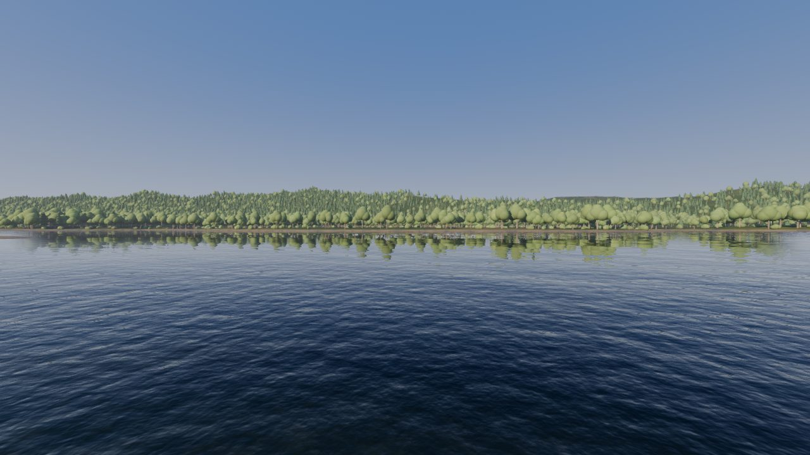
Plate II. — Where the river opens into a lake.
✦
Entry the Third · 23rd November
Of Eddies and Backwaters
Every boatman knows that behind an island, or in the lee of a jutting point, the water turns back upon itself and runs upstream in a slow circle. These eddies are now to be found on our river. Foam drifts into them and lingers, turning lazily, while the main current hurries past a few yards away.
A tired oarsman may yet find rest in such a place, and an incautious one may find himself going round in circles.
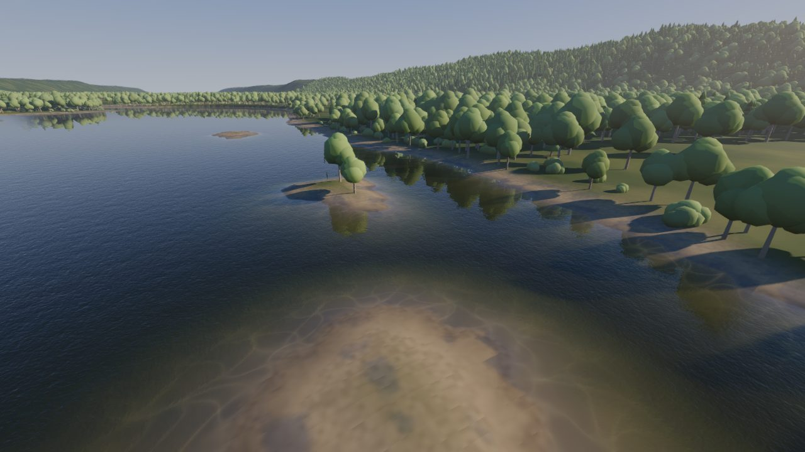
Plate III. — A quiet backwater in the lee of the bank.
✦
Entry the Fourth · 23rd November
The Water Made Honest
Mr. Tom took the raft out for trials and returned with a list of grievances. The foam, he said, looked as though the river had been painted with whitewash. There was a curious green glow beneath the surface. The ripples crawled across the water like crumpled paper, and everywhere they were the same, as if the whole river were equally troubled.
The engineer set to work. The foam is now a loose, broken froth that gathers where the water is rough and thins where it is not. The ripples have a life of their own: lively in the current, gentle in the quiet reaches. Where the river meets a boulder the water heaps up against it and spills round in a pillow, the stone is dark and wet at the waterline, and in the faster runs a little spray is thrown up.
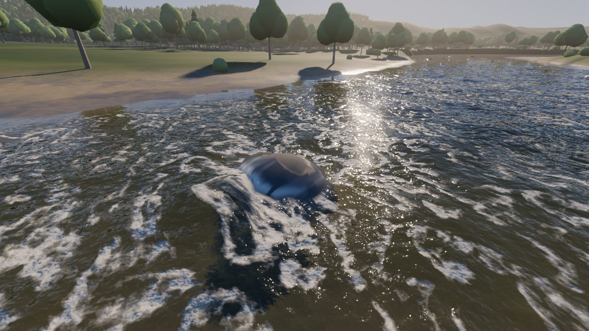
Plate IV. — Water heaping round a boulder in the riffle.
Mr. Tom's verdict upon the second trial: "Awesome." The engineer has framed it.
✦
Entry the Fifth · 23rd November
Of Days, Nights, and the Lantern
The sun now keeps proper hours, rising and setting as it would in these latitudes, higher in summer and low in the winter months. The moon follows its own road across the night. Mist lies thick upon the water at sunrise and burns away by midday, and at dusk the lantern on the raft is lit of its own accord.
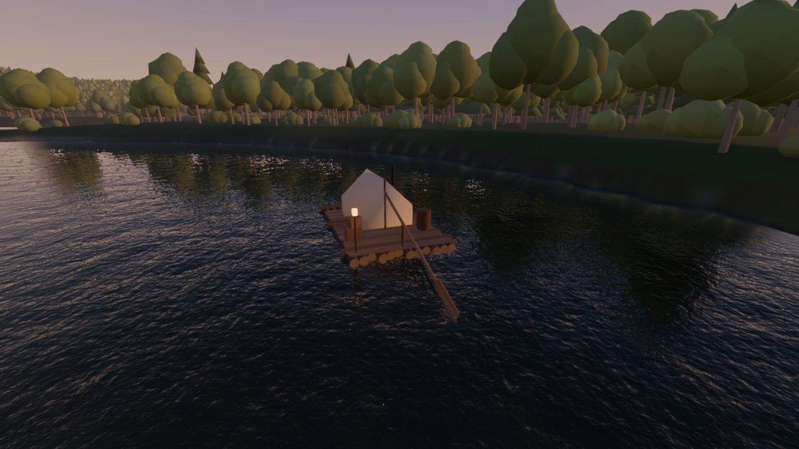
Plate V. — Evening, the lantern lit.
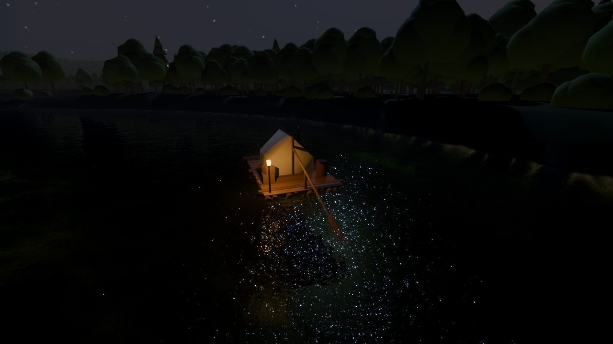
Plate VI. — The river by night.
✦
Entry the Sixth · 23rd November
A River Without End
Here is the heart of the matter. Until now our river was a single stretch of some few miles, and at its end a traveller would come to nothing at all. It has no end now. As the raft drifts on, the country ahead is laid out before it, as if a surveyor were always just around the next bend, and the country left far behind is quietly rolled up again.
The river keeps a general heading southward, but it does not run straight. Over many miles it swings away east or west in great sweeping turns, so that the traveller never quite knows which way the morning sun will greet him.
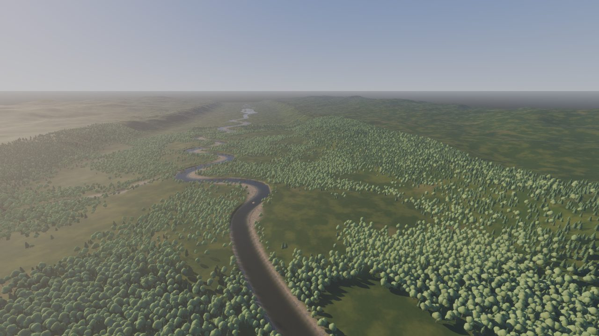
Plate VII. — As the birds see it: the river running on to the horizon.
✦
Entry the Seventh · 23rd November
Of Banks, Bends and Bars
Mr. Tom observed that our river, for all its length, was rather too much like a snake: always the same width, always the same sort of bend, the banks dull as a towpath. He was quite right.
The river now changes its character as it goes. For a few miles it may wind tightly back and forth; then it relaxes into long, lazy curves; then it runs almost straight and deep; then it spreads broad and shallow. It widens at the bends and pinches in the narrows. On the inside of a sharp bend a beach of sand and gravel forms, and in the broad reaches low bars stand out of the stream. In some places the banks are low and grassy; in others they rise high and steep, cut away by the water.
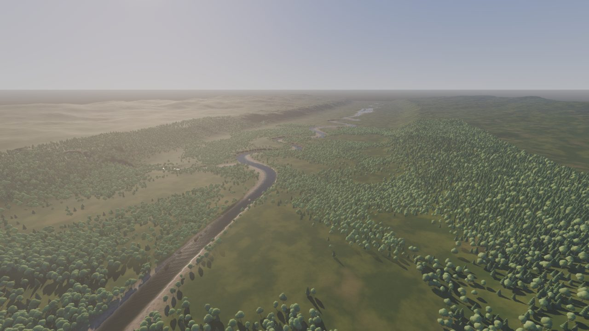
Plate VIII. — A broad reach, with beaches on the bends.
✦
Entry the Eighth · 23rd November
Gorges, Old Loops and Fallen Trees
Further downstream the traveller will now meet a good deal more. In places the river has cut deep through the high ground and runs dark, narrow and quick between cliffs of banded rock, with fallen boulders at their feet. Elsewhere it does the opposite and spreads so wide and shallow that it splits into a dozen threads among the gravel bars, and the raftsman must choose his channel with care.
Now and then a second channel slips away behind a long wooded island and rejoins the river half a mile on, and one may take either way. Out on the meadows lie old loops of the river, long since abandoned, still and quiet as ponds. And along the outside of the bends, where the water has undercut the bank, trees have toppled into the current and lie there with their branches in the stream. They are best given a wide berth.
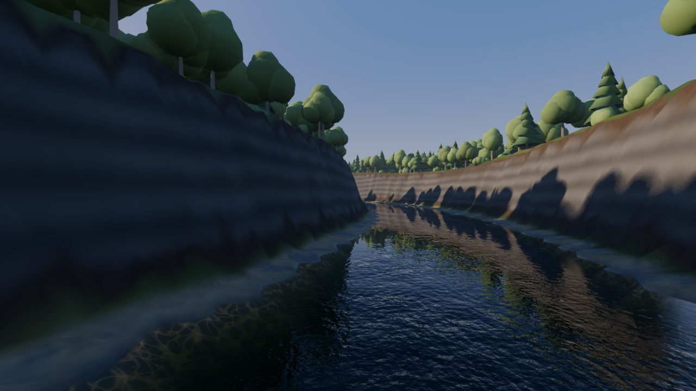
Plate IX. — Into the gorge.
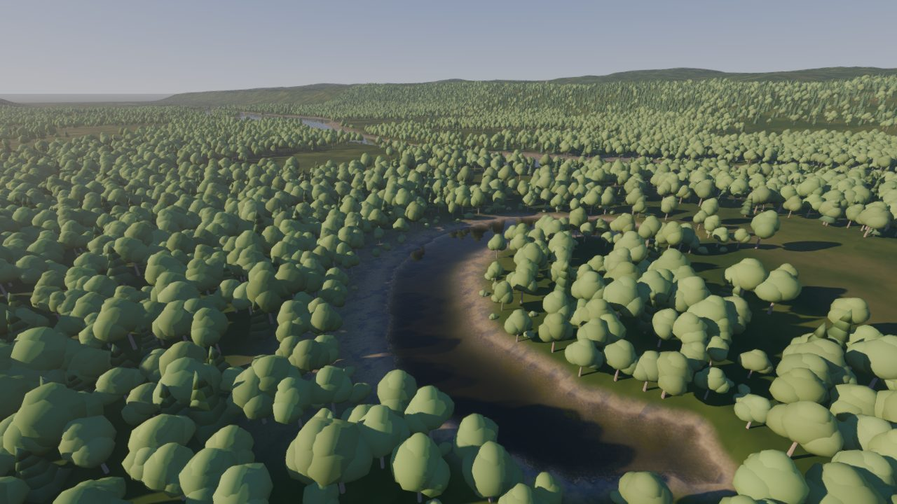
Plate X. — An old loop, cut off and still.
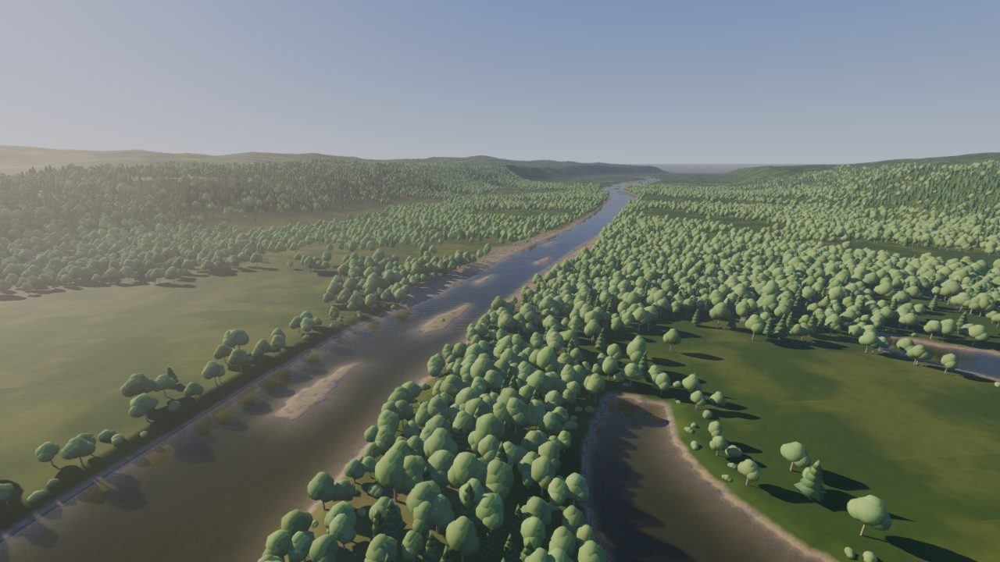
Plate XI. — Two ways round the island.
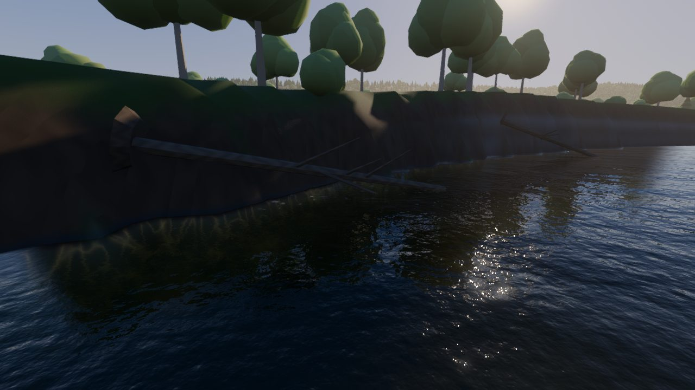
Plate XII. — A fallen tree. Mind the raft.
✦
Entry the Ninth · 23rd November
The Forest Comes
Until today our woods were made of rough wooden toys, good enough to tell the shore from the water and no more. Mr. Tom has grown a proper forest in the studio's own tree-making contraption, NoorForm: birch, oak, pine and spruce, each in several shapes and sizes, with bark and leaves that stir in the wind.
They have been planted with some thought. Birches crowd the water's edge, standing in for the alders and willows we had yet to grow. Oaks keep to the open meadows, pines to the drier ground, and spruce climbs the valley sides. Near at hand every leaf is there; on the far hills the forest is a painted backdrop, but a convincing one.
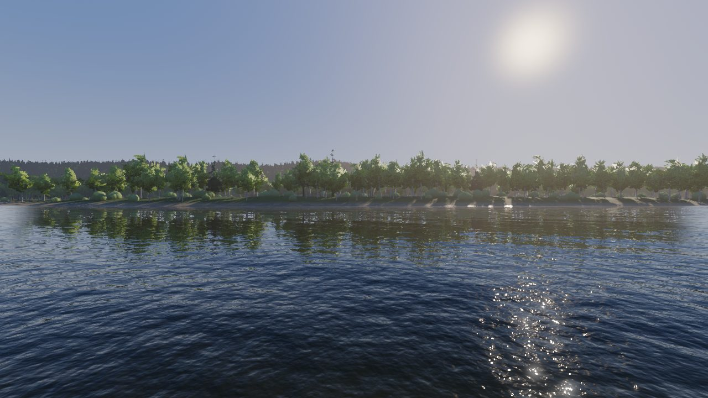
Plate XIII. — The new forest along the lake shore.
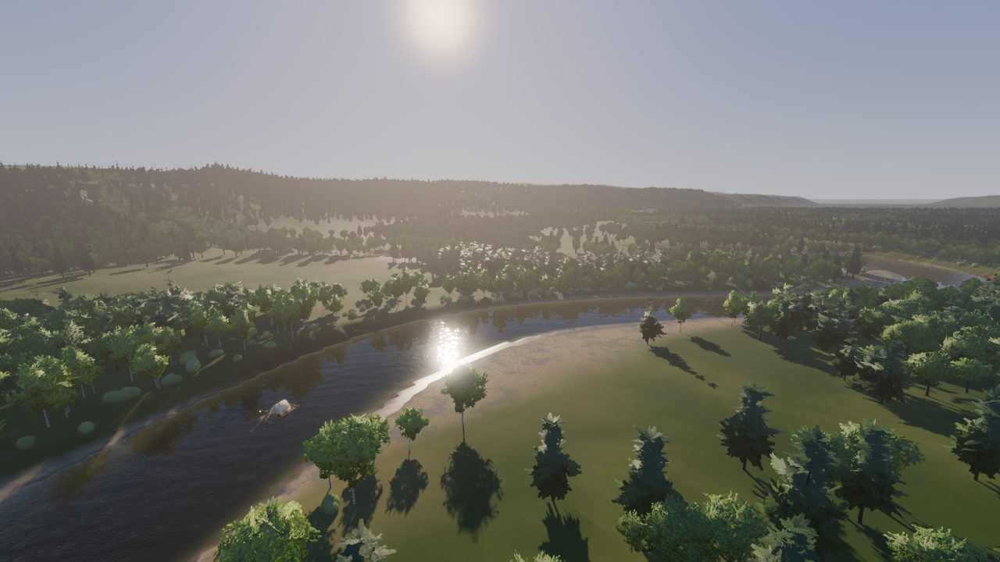
Plate XIV. — The raft rounding a bend among the new trees.
✦
Entry the Tenth · 23rd November
Of White Water, and a Willow
We have our first rapids. Every so often the river gathers itself, narrows, and goes tumbling down a long stony slope. Two ledges of rock lie across it just beneath the surface, and the water pours over them in a white rush. Boulders stand out of the current between, each with a cushion of water heaped against its face, and the waves rear up and stand quite still while the river races through them. Where the river has cut a gorge, it is all rapids.
There is always a way through. A channel winds down among the rocks, deep enough for the raft, and a traveller who keeps his oar busy and his eyes open will come out at the bottom wet, shaken, and in one piece. The engineer sent the raft down unmanned to be sure of it. It struck one boulder, spun a little, and sailed on.
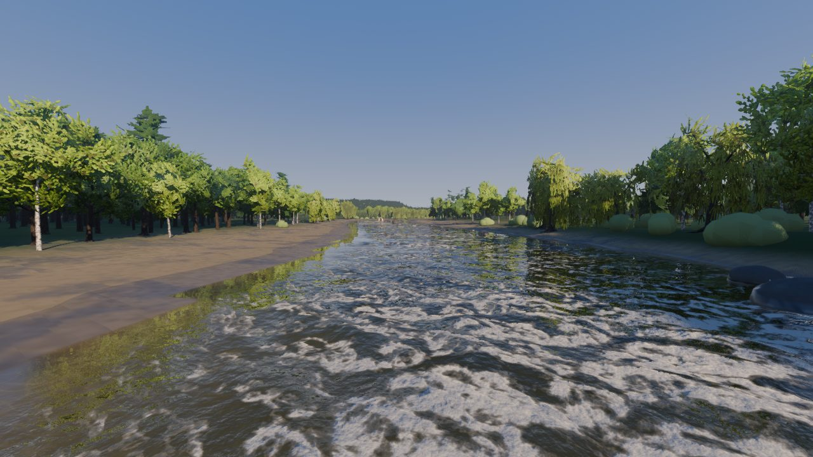
Plate XV. — The first rapid, from just above the water.
Meanwhile Mr. Tom has grown a weeping willow, and the riverbanks are the better for it. Willows now stand at the water's edge along the river and around the old cut-off loops, trailing their long green hair in the shallows, exactly where a traveller would expect to find them.
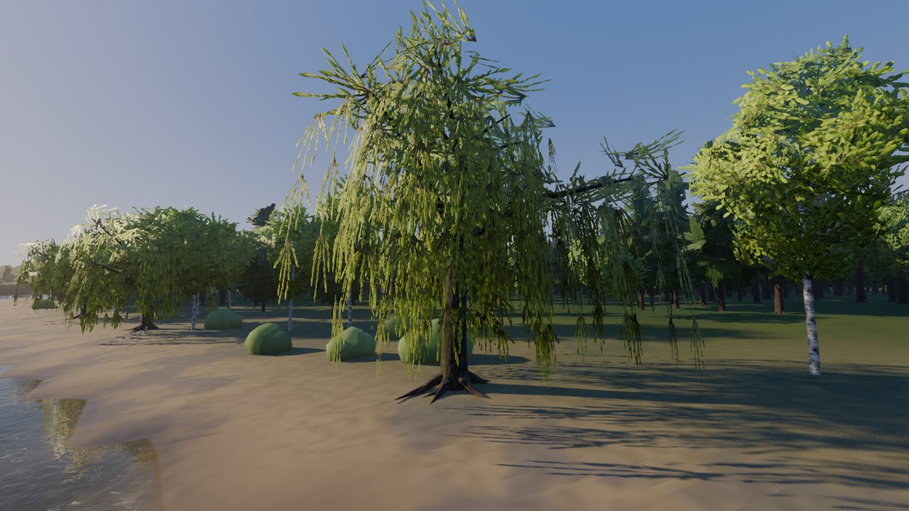
Plate XVI. — A weeping willow on the shore.
A traveller in a hurry may now ask to be set down directly above the first rapid. The engineer recommends it.
✦
Entry the Eleventh · 24th November
Of Steadier Instruments
A confession from the engineer. Our instruments, it turns out, grew less certain the farther the raft travelled from where it set out, rather as a surveyor's chain stretched over too many miles begins to lie. Twenty miles downstream the water would have begun to shiver for no reason, and the raft to tremble at its moorings.
The remedy is a traveller's one: every mile or so we quietly take a fresh bearing from wherever we happen to be, and reckon everything anew from there. Nothing in the world moves, nothing is seen to change; only the sums are kept short. The raft may now go as far as its crew can bear, and the river will be as steady at the hundredth mile as at the first.
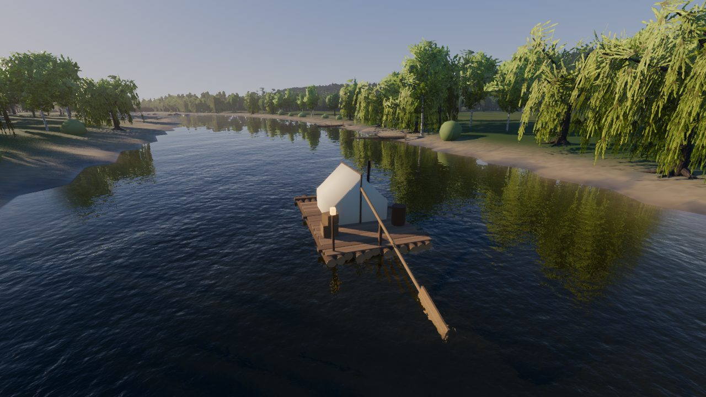
Plate XVII. — Waiting above the first rapid, under the willows.
✦ ✦ ✦
The Road Ahead
The instruments being steady at last, the river may run as long as it likes. Next, if all goes well, a waterfall, around which the raft must be carried by hand; then wakes behind the raft, rain upon the water, and reeds and lilies in the quiet places.